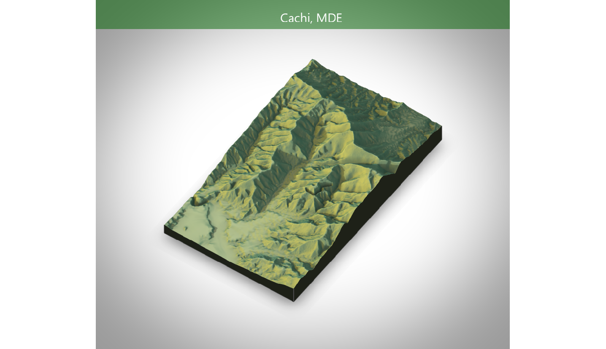

La problemática principal conocida es que se trata de una comunidad desarrollada linealmente a lo largo de un cono de deyección con características torrenciales de muy alta energía. El espesor de los depósitos sedimentarios el calibre de los materiales y la pendiente misma del cono así lo revelan.
Para el mapeo de estructuras, infraestructura e edificaciones así como uso del suelo y algunas amenazas presentes se han realzado numerosas giras y un total de 12 vuelos con “drone”. Algunos de esos vuelos no dieron resultados apropiados especialmente por desenfoque de la cámara pero nueve de ellos fueron exitosos y permitieron cubrir la parte más sensible de las comunidades que habitan en la microcuenca del río Naranjo.
Durante las visitas se ha conversado de manera no formal con algunos vecinos del área para ir conociendo un mínimo de las problemáticas que afrontan y el lugar que ocupa en sus preocupaciones el tema de lo que nosotros llamamos amenazas. Así hemos aprendido que efectivamente ha habido crecidas recientes aún muy frescas en la memora de los habitantes las cuales han afectado total o parcialmente sus viviendas y otros bienes.
Diseño y desarrollo web:
Fuente: Elaboración propia, Sistema Nacional de Información Territorial